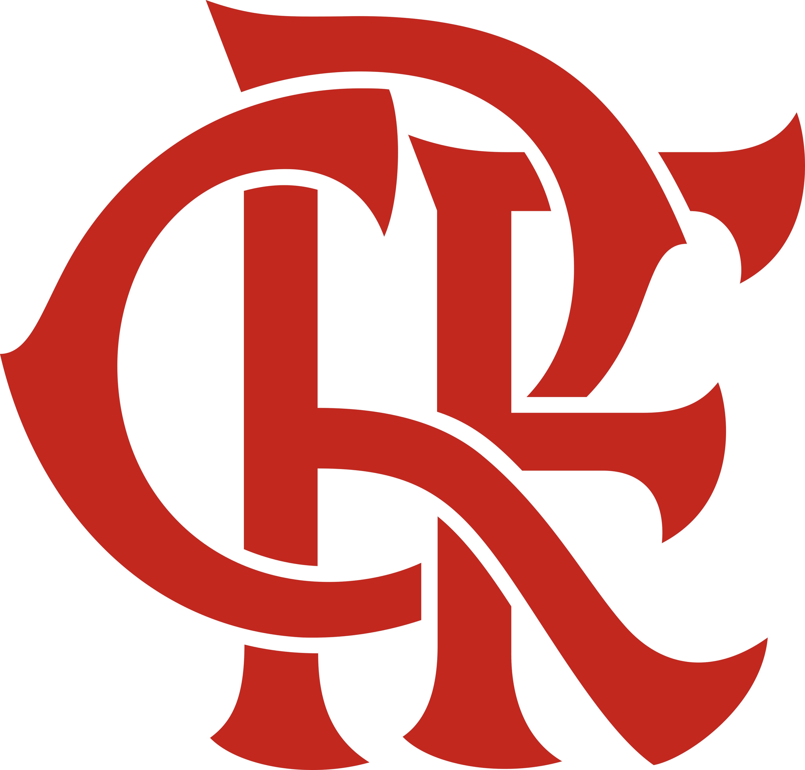

Flamengo
Se na época da fundação do Flamengo o remo reinava absoluto como esporte favorito dos cariocas, em pouco tempo outra modalidade começou a rivalizar pela preferência do público: o futebol. E o Flamengo estava predestinado a ter papel de protagonista nesta nova paixão nacional. Em 1911, houve um desentendimento interno no Fluminense. Alguns jogadores falavam trocar de clube, enquanto outros até mesmo pensavam em abandonar o futebol. Foi quando Alberto Borgerth, um dos jogadores do Fluminense, fez a proposta de criar uma seção de futebol no Flamengo, onde já era remador. A ideia foi aprovada e, no dia 8 de novembro daquele ano, foi criado o Departamento de Esportes Terrestres rubro-negro.
